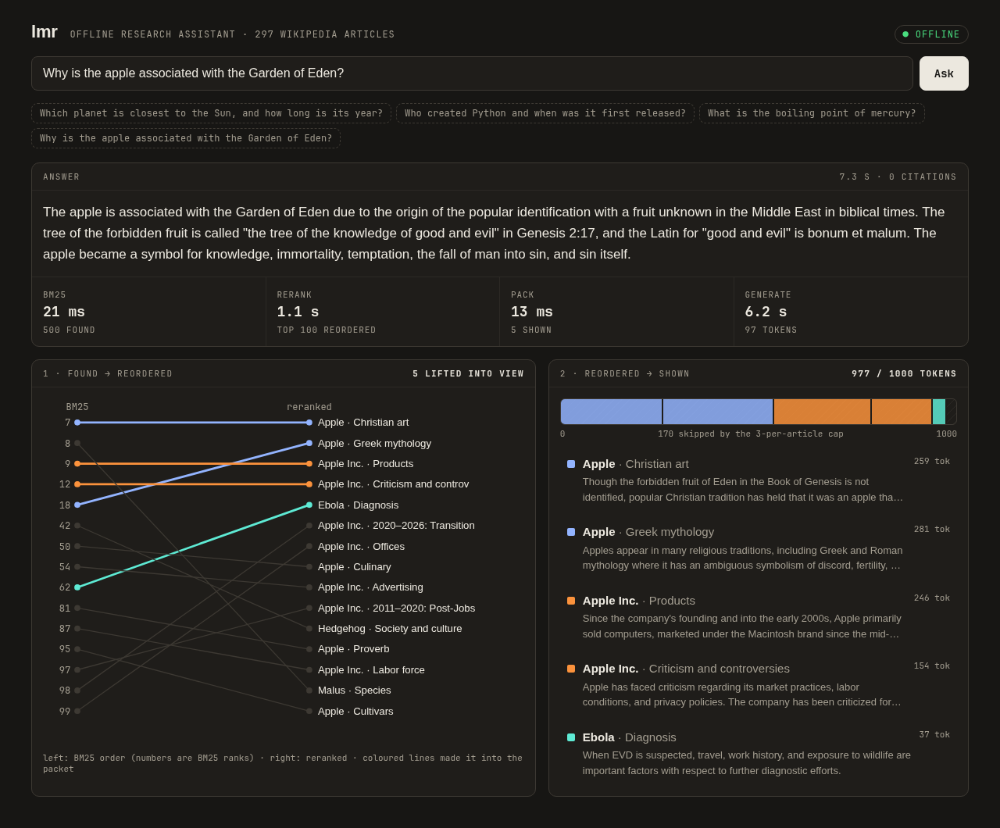
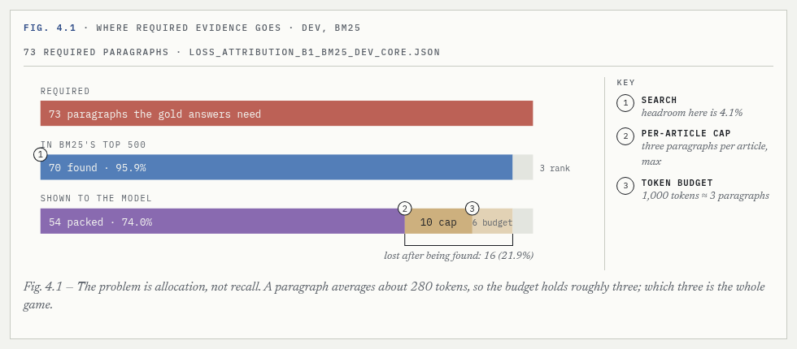

An offline research assistant that shows its work.
Ask a question about 297 pinned Wikipedia articles. Keyword search (BM25) finds the evidence, a 17M cross-encoder reranker decides what fits in a 1,000-token budget, and a local Qwen2.5-1.5B model, run by llama.cpp on the CPU, writes the answer. No network after setup, no GPU.
On a desktop CPU it answers in about 5 s once warm (lmr serve); a cold one-off lmr ask took 11.6 s wall, because it also loads the index, reranker and model.

The finding
Search was already good: BM25 found 96% of the paragraphs the questions needed. The loss happened after search: about a quarter of what was found never fit in the model's budget. The 17M reranker found nothing new; it reordered what BM25 had, and 13 points more of the needed evidence reached the model. The generator is now the bottleneck.

Move the rerank depth and the token budget and watch the pack change. Recorded scores, live recompute.
Run it
Linux x86-64, Python 3.11+, uv.
git clone https://github.com/davidghatley/local-mobile-research && cd local-mobile-research uv venv # CPU torch first, or pip pulls multi-GB CUDA wheels: uv pip install torch --index-url https://download.pytorch.org/whl/cpu uv pip install -e ".[rerank]" .venv/bin/lmr setup # ~1.1 GB, hash-checked .venv/bin/lmr ask "Which planet is closest to the Sun, and how long is its year?" .venv/bin/lmr serve # http://127.0.0.1:8765
Limits
- Fixed corpus of 297 articles; importing your own documents is not built.
- The 1.5B generator rarely emits citations and can add facts that are not in its evidence.
- Linux x86-64 only.